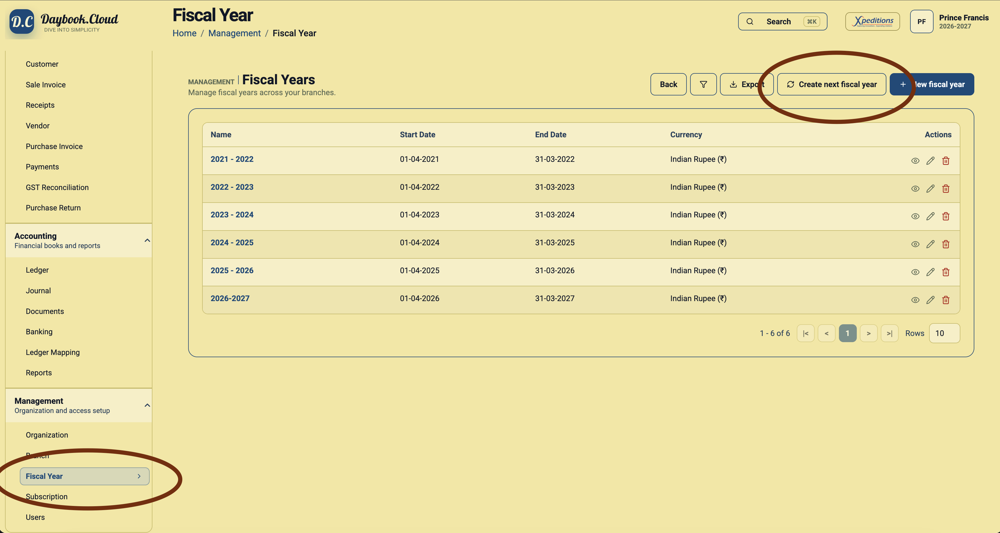
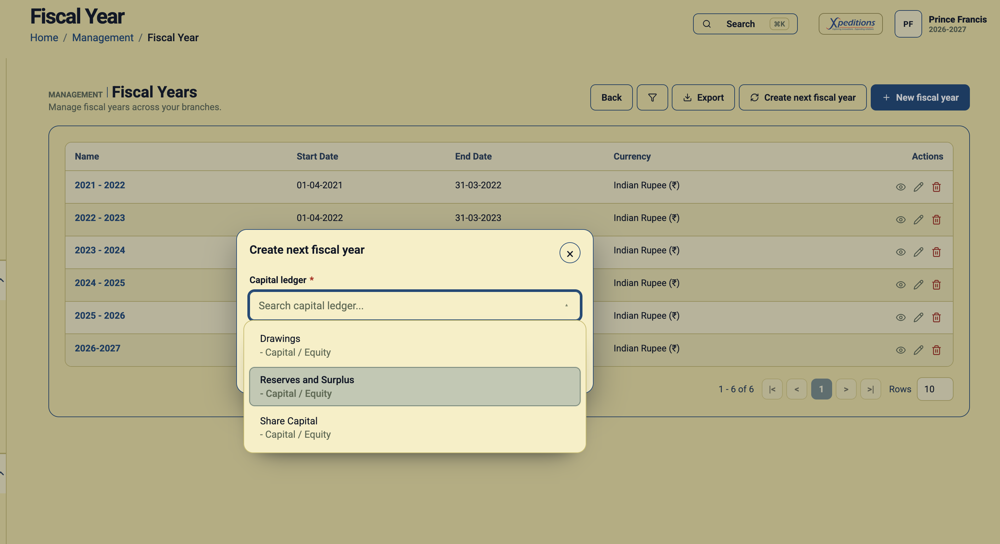
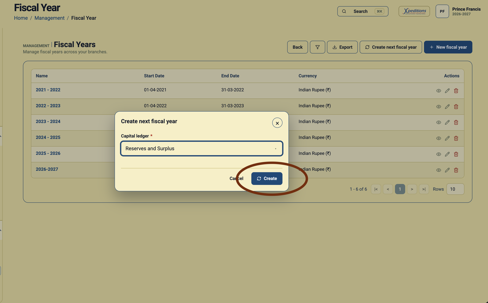

At the end of an accounting year, a business needs a clean way to continue bookkeeping without losing the balances built up in the previous year. In Daybook.Cloud, the Create next fiscal year action creates the next period and transfers balances so the new year starts with the correct opening position.
This guide explains how to create the next financial year from the Fiscal Year page and why the capital ledger selection matters during balance transfer.
Before you start
Review the current books before rolling forward. The rollover should normally be done after the team has checked important year-end numbers and confirmed the capital or equity ledger with an accountant.
- Confirm that the latest fiscal year is the year you want to roll forward from.
- Review pending invoices, payments, receipts, journals, and adjustments for the closing year.
- Choose the capital ledger that should receive the transferred result, such as Reserves and Surplus, Share Capital, or another accountant-approved equity ledger.
- Make sure users know which financial year they should post new transactions into after the rollover.
Step 1: Open the Fiscal Year page
In Daybook.Cloud, open the left navigation and go to Management. Select Fiscal Year. The page lists each financial year with its start date, end date, currency, and available actions.
Use this page to confirm the existing sequence before creating the next year. For example, if the list ends at 2026-2027, the next generated period should be the following financial year.

Step 2: Click Create next fiscal year
Click Create next fiscal year from the action bar. Daybook.Cloud opens a rollover dialog instead of asking you to manually type the next start and end dates. This keeps the period sequence consistent with the latest fiscal year already present in the list.
Step 3: Select the capital ledger
In the dialog, select the Capital ledger. This ledger is required because balance transfer needs an equity or capital account to carry the closing result into the next year.
Many teams use Reserves and Surplus for this purpose, but the correct ledger depends on your chart of accounts and accountant-approved closing process. If you are unsure, confirm the ledger before creating the next fiscal year.

Step 4: Create the next financial year
After selecting the capital ledger, click Create. Daybook.Cloud creates the next fiscal year and transfers balances from the closing year into the new year.
The transfer helps the business continue bookkeeping with opening balances in place, instead of manually recreating ledger balances for the new period.

Step 5: Verify the new year
After creation, return to the Fiscal Year list and confirm that the new period appears with the expected start date, end date, and currency. Then switch to the new financial year and review key ledger balances before entering new transactions.
- Check that the new fiscal year has been added only once.
- Review opening balances for bank, cash, receivable, payable, loan, and capital accounts.
- Confirm that the selected capital ledger reflects the transferred closing result correctly.
- Post new invoices, receipts, payments, and journals in the new fiscal year only after the balances look correct.
Why balance transfer matters
A financial year rollover is more than adding a new date range. Balance sheet ledgers such as cash, bank, receivables, payables, loans, duties, and equity need to continue into the next year. Without balance transfer, teams may see incomplete opening positions and spend time correcting ledger reports later.
The Daybook.Cloud rollover workflow reduces that manual effort by combining next-year creation with balance carry-forward in one controlled action.
Good practices for year-end rollover
- Run important reports before the rollover so the closing year can be reviewed.
- Finish pending year-end journals before transferring balances.
- Use a capital ledger that matches your accounting policy.
- Keep the old financial year available for review, audit, and corrections if your process allows approved back-dated entries.
- Train users to check the selected fiscal year at the top of the app before posting transactions.